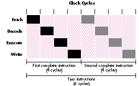
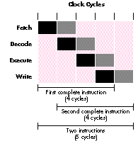

Apple will soon be introducing the first Macintosh CPU architecture not based on a
68000-family microprocessor. The entirely new architecture is built around a new
RISC CPU -- the PowerPC microprocessor jointly designed by IBM, Motorola, and
Apple. Truly taking advantage of PowerPC technology will require an ongoing effort by
both Apple and developers. Apple is making the first leap to this new platform; now it's
up to developers to make the next leap and bring the performance made possible by
PowerPC technology to their applications.
In 1984, Apple Computer offered a startling vision of the future of personal
computing by introducing the Macintosh, which radically changed the desktop. Now,
nearly ten years later, the computing world embraces graphical interfaces. Ten years
is a lifetime in computing terms; at that age, many computing architectures are
considered ancient. The Macintosh enters its second decade by looking to the future
while remembering its past -- making the transition from the sturdy Motorola
68000 family to the sleek new PowerPC processor-based family without forsaking
developers and users and their investment in the 680x0 architecture.
The PowerPC microprocessor is the most significant change to date in the Macintosh
product line. This article introduces the new PowerPC architecture and discusses the
ramifications for existing applications, as well as opportunities for new or revised
applications to take full advantage of the power of the new chip. It contrasts the new
architecture with the old and explains how this new architecture both acknowledges
the past and prepares for the future.
Much has been written about the differences between a CISC (complex instruction set
computer) architecture, used in Motorola's MC680x0 processors, and a RISC (reduced
instruction set computer) architecture, used in the PowerPC microprocessor. The
relative merits of the two architectures have also been widely debated. A detailed
discussion of CISC and RISC is beyond the scope of this article, but some understanding
of RISC principles is useful for understanding PowerPC architecture.
Two logical considerations motivated CISC development. The first was a desire to
simplify assembly-language programming by enriching the functionality of the
instruction set. CISC architectures did this by providing a greater variety of
instructions, as well as a wide array of addressing modes, thereby reducing the
number of steps required to perform a particular operation. Second, as writing
compilers became easier, there was a desire to provide instructions more closely
related to operations performed by high-level languages. CISC architectures were
marvelously successful at satisfying this goal also. In the early 1980s, hardware
designers began to run into the limitations inherent in CISC architectures,
particularly in their ability to streamline the flow of instructions. At the same time,
the software world was deemphasizing assembly-language programming in favor of
high-level languages with sophisticated, optimizing compilers. This allowed hardware
designers to simplify their architecture and shift much of the performance burden to
compiler writers.
The classic equation for execution time is
where ET is the total execution time, N is the
number of instructions executed, CPI is the number of cycles per instruction, and CT is
the cycle time. Both CISC and RISC architectures benefit from reduced cycle time.
Faster clock rates translate directly to smaller cycle times, and hence shorter
execution times. Where CISC and RISC architectures differ is in their approach to N and
CPI. CISC tries to shorten execution times by minimizing N, while RISC tries to
minimize CPI.
PIPELINING
The four typical stages in executing an instruction are fetch, decode, execute, and
write. In a simplistic architecture, these stages all happen in sequence, and the next
instruction can't start until the previous instruction has finished, as shown in Figure
1. Designers realized that this need not be the case and that each of these stages can
overlap. Once an instruction is fetched and passed to the decode stage, the next
instruction can be fetched without waiting for the first instruction to complete. This
technique, known as pipelining, is shown in Figure 2.
The example in Figure 2 executes the same two instructions, but in only nine cycles,
compared to 12 cycles in the nonpipelined case. There's a curious thing about this
example, though: the second instruction takes eight cycles to complete when pipelined,
but only five when it's not. This is because the various stages take different amounts of
time to complete. The overall result is better, but unnecessary delays can occur in
instruction execution.
Figure 1 Nonpipelined Stages of Execution
Figure 2 Pipelined Stages of Execution
Variable numbers of cycles per stage is a characteristic of CISC architectures.
Complex instructions may occupy multiple words, requiring multiple cycles to fetch.
Multiple operands complicate the process of decoding. More complicated instructions
take longer to execute than simpler instructions. In Figure 2, the execute stage of the
second instruction is delayed two cycles while waiting for the first instruction to
execute. This is known as a pipeline stall. Similarly, the write stage sits idle for one
cycle between the first and second instructions while waiting for the execute stage of
the second instruction to complete. This is known as a pipeline bubble. Both stalls and
bubbles reduce the efficiency of the pipeline and increase the overall number of cycles
per instruction.
INCREASING PIPELINE EFFICIENCY
RISC architectures work very hard to eliminate inefficiencies in the instruction
pipeline and keep the pipeline jammed full. RISC architectures share most or all of the
following common features:
Figure 3 shows an example of executing instructions on a nonpipelined RISC machine.
When instructions are not pipelined, they complete serially, with two instructions
completing in eight cycles. The optimal case for pipelining instructions is shown in
Figure 4. Now you have the two instructions executing in just five cycles. If the
pipeline is kept full like this, the number of cycles per instruction drops to just one.
This is the goal of most RISC architectures.

Figure 3 RISC Nonpipelined Stages of Execution

Figure 4 RISC Pipelined Stages of Execution
One cycle per instruction is the ideal case for this example, but in reality, stalls and
bubbles occur, even in the best architectures. This is where the compiler comes into
play. The compiler has detailed knowledge of how the program should work. It need not
perform operations in the order specified in the source code; it need only guarantee
that the right result is obtained. If you build into the compiler some knowledge of how
to make best use of the CPU, the compiler can make a huge difference in program
performance.
Consider the following two C instructions:
b = *a + 5;
d = *c + 10;
The variables a, b, c, and d are all long or pointer-to-long variables. The compiler
might generate the following assembly instructions on the PowerPC microprocessor:
lwz r5,0(r3) ; Load value pointed to by r3 into r5
addi r5,r5,0x0005 ; Add 5 to value in r5
lwz r6,0(r4) ; Load value pointed to by r4 into r6
addi r6,r6,0x000a ; Add 10 to value in r6
The lwz instruction (Load Word and Zero) loads a register from a source value. On a
PowerPC processor, words are 32-bit values; 16-bit values are half words.
The addi instruction (Add Immediate) adds the immediate value and stores the result.
Figure 5 shows what happens when these instructions execute. Both addi instructions
stall in the decode stage because they can't enter the execute stage until the register is
available from thelwzinstruction.
The compiler can prevent the stalls. Instead of following the flow of the original source
code, you can rearrange the instructions as follows:
lwz r5,0(r3) ; Load value pointed to by r3 into r5
lwz r6,0(r4) ; Load value pointed to by r4 into r6
addi r5,r5,0x0005 ; Add 5 to value in r5
addi r6,r6,0x000a ; Add 10 to value in r6
Now look at what happens to the instruction pipeline (Figure 6): there are no delays.
By moving the add instructions to later in the instruction stream, you allow the load
instructions they depend on to complete, so the add instructions can execute
immediately.
Figure 5 Stalled Pipelined Execution
Figure 6 No-Delay Pipelined Execution
BRANCHING
All pipelined architectures face the problem of branches. Any time a conditional
branch is encountered, the processor faces a dilemma because now two instruction
streams are possible. It can't pipeline both possible paths. It can guess which path to
take, but if it guesses wrong, the pipeline is disrupted.
One common approach to this problem is a technique called delayed branching. In
delayed branching, the processor always executes the instruction immediately following
the branch instruction. While starting this instruction, the CPU can be figuring out
the destination of the branch instruction and so can keep the pipeline flowing. Of
course, it's important that the instruction after the branch not affect the branch. It's
up to the compiler to find an instruction unrelated to the branch instruction to fill this
delay slot. If it can't fill the delay slot, the compiler can always put in a no-op
instruction, but this is inefficient. Some architectures allow the instruction in the
delay slot to be ignored if the branch is taken. This avoids the need to fill the delay slot
with a no-op instruction, but undermines the purpose of delayed branching. PowerPC
architecture takes a unique approach to the branching problem, as discussed later in
the section "Branch Processor."
SUPERSCALAR DESIGN
Another technique RISC designers use to increase performance is superscalar or
multi-issue design. The simpler design of RISC architectures makes it possible to
build in multiple processing units; this is superscalar design. In the same way that the
compiler can juggle instructions to avoid resource constraints, the CPU can now
reduce bottlenecks and achieve higher performance by feeding instructions to separate
processing units operating in parallel. This allows average instruction cycle times to
drop below one cycle per instruction. PowerPC microprocessors use this technique as
discussed later in the section "Functional Units of the PowerPC Microprocessor."
RISC ADVANTAGES
One last point needs to be made before leaving a comparison of CISC and RISC. Many of
the techniques used by RISC designers can and are used by CISC designers. Modern CISC
chips such as the MC68040 and Intel 80486 make extensive use of instruction
pipelining, parallel integer and floating-point units, fast cache architectures, and
resource constraint reduction (such as delayed writes) to achieve the performance
they do. But the sheer complexity of the designs means they're hard to implement (and
implement correctly), which often results in long development cycles. The simplicity
of RISC architecture helps avoid this problem.
Similarly, the compiler can aid CISC machine performance. But the complexity of CISC
design means it's nearly impossible to determine instruction timing, so it's difficult
for the compiler to choose the best instruction sequence. Instruction scheduling is also
possible but more difficult. The finer granularity of the RISC instruction set gives the
compiler much more flexibility and control over the resources provided by the CPU.
Simplified hardware and the influence of the compiler are really the ultimate
advantages of RISC.
PowerPC architecture is a modern 64-bit, RISC architecture adhering to all the
previously discussed design goals. It has 32 general-purpose and 32 floating-point
registers. All instructions have a uniform 32-bit length. The first PowerPC
microprocessor, the PowerPC 601, is a superscalar implementation of the 32-bit
subset of this architecture.
POWERPC VERSUS POWER
The PowerPC microprocessor is a single-chip design descended from an earlier,
multichip IBM RISC implementation known as POWER. It's worth mentioning the
differences between the two architectures.
PowerPC architecture uses big-endian byte order, just like 680x0 and POWER. As an
added feature, it also supports a mode using little-endian byte ordering and provides
instructions to allow access to little-endian data from big-endian mode and to
big-endian data from little-endian mode.
For divisible integer quantities composed of separately addressable bytes -- for
example, a 32-bit integer subdivided into four addressable bytes -- there are
numerous ways to arrange the bytes. Only two arrangements make sense and are in use
on computers today. Big-endian byte ordering means the most significant byte (the big
end of the number) is assigned the lowest address. Little-endian byte ordering means
the least significant byte is assigned the lowest address; it's used, for example, on Intel
80x86 CPUs. The terms originated in Jonathan Swift's Gulliver's Travels, where the
controversy was over breaking an egg at the big end or the small end. *
Figure 7 is a block diagram of the PowerPC 601 microprocessor, the first member of
the PowerPC processor family. This microprocessor is a superscalar PowerPC
implementation, with three separate execution units: the fixed-point and
floating-point units and the branch processor. The branch processor initiates
instruction execution by fetching instructions from the instruction cache (which is
filled from memory if there are no instructions in it). The branch processor then
feeds integer and floating-point instructions to the fixed-point and floating-point
units respectively. These units operate on data in registers and in the data cache
(which is filled from memory if there's no data in it). The fixed-point unit is also
involved in address decode operations.
BRANCH PROCESSOR
The branch processor deserves special attention. As mentioned earlier, PowerPC
architecture takes an original approach to the problem of branch penalties, and the
branch processor is responsible for this. The branch processor contains within it
everything needed to determine how to handle a branch instruction. This includes three
special-purpose registers:
Figure 7 Block Diagram of PowerPC 601 Chip
For unconditional branches, the branch processor knows unambiguously which path to
take. For conditional branches, if a branch condition is set far enough before the actual
branch instruction, the branch processor has the information necessary to determine
which path to take. The design of the condition register uniquely aids the processing of
conditional branches. Instead of a single set of condition codes, it contains eight 4-bit
condition code fields, designated CR0, CR1 . . . CR7. Compare operations allow each
field to be set independently. A compiler using these multiple, independent condition
code fields has more flexibility in scheduling instructions to assist the branch
processor. As an additional performance enhancement, instructions that might set
condition codes (such as add) do so only if a record bit is set in the instruction, so time
isn't spent setting condition codes that would otherwise be ignored.
The branch processor also has knowledge of the count register, used in looping
operations. This lets the branch processor know in advance when a loop will finish.
With this design the branch processor can preprocess the instruction stream and, in
most cases, determine in advance the target of the branch operation. This allows it to
"fold" the branch instruction out of the instruction stream, so the fixed-point and
floating-point units see an unbroken stream of instructions and fewer branch
penalties occur.
An important goal in the development of Apple's PowerPC processor-based machines
was to preserve user and developer investment in the 680x0 architecture. Another
important goal was to port the existing 680x0 Toolbox and operating system to the new
platform quickly. Both goals were met through the ability to emulate 680x0
instructions in software on the PowerPC microprocessor. So the first way to view a
Macintosh on PowerPC, and indeed the way existing applications and system software
view this machine, is as a 680x0-based Macintosh. In this section we approach this
new beast through the 680x0 emulator and then peel away the layers to reveal the
underlying PowerPC runtime architecture.
SOFTWARE EMULATOR
The software emulator understands and executes the instruction set of a Motorola
MC68020 processor. You might wonder why Apple chose to emulate the MC68020 and
not the latest and greatest processors such as MC68030 and MC68040.
As a bonus feature, the emulator also supports certain advanced user-mode
instructions such as the MOVE16 instruction from the MC68040. However, from a
programmer's point of view, the emulator behaves as an MC68020 (for example,
Gestalt reports an MC68020 is present) and developers are advised not to take
advantage of any features outside the MC68020 architecture.
Once the emulator was up and working, the PowerPC processor-based machine almost
immediately gained an operating system, since all the code in the ROM and the
operating system was now executable. This also gave the machine a high degree of
compatibility with older Macintosh models, because the same code, with all its
idiosyncrasies, is being executed.
Had Apple stopped here, you'd have a machine that works great but is pretty boring.
After all, who wants a machine that pretends to execute 680x0 code, but not
necessarily as fast as the real thing? Why not get a real 680x0 machine instead? The
answer, of course, lies in tapping into the power behind the emulator -- the PowerPC
microprocessor itself.
TOOLBOX ACCELERATION
All Macintosh applications spend part of their time calling the Macintosh Toolbox. In
turn, the Toolbox performs the requested service by executing Toolbox code on behalf
of the application. You can think of the Toolbox as an extension of the application. The
advantage of this during development of PowerPC processor-based machines is that
selectively replacing portions of the Toolbox with equivalent PowerPC code greatly
enhances the performance of those portions of the Toolbox. All applications that use
those routines benefit from improved performance. No modification of the application
is required to receive the benefit.
Ideally, of course, it would be best if the entire Toolbox executed as native code. But
that requires a huge amount of work and would delay the first release of Macintosh on
PowerPC. Analysis of application programs revealed that some portions of the Toolbox
are used more heavily than others. All applications, for example, rely heavily on
QuickDraw. Effort spent porting QuickDraw would benefit more applications than, say,
porting the Dialog Manager. So the first release of Macintosh on PowerPC will target
the portions of the Toolbox that will provide the greatest performance enhancement to
the greatest number of applications.
As Apple releases new versions of the system, with more and more of the Toolbox as
native PowerPC code, users will magically get a "faster" machine without adding new
hardware. All they have to do is install the newer, accelerated Toolbox.
At the same time, the goal is not just to enhance the performance of the system, but to
empower application software as well. The accelerated Toolbox is a start, but real
PowerPC application performance comes from having native PowerPC applications,
and the first release of Macintosh on PowerPC will include an entirely new runtime
architecture in support of native applications.
WHY A NEW RUNTIME ARCHITECTURE?
The new runtime architecture addresses many of the following limitations of the
680x0 architecture:
CODE FRAGMENT MANAGER
The centerpiece of the new architecture is the Code Fragment Manager. Each block of
executable PowerPC code is a code fragment. A code fragment is autonomous, with its
own static data. It can export both code and data references for use by other fragments
and import code and data references from other fragments for its own use. Because such
references are resolved at run time, code fragments are a form of dynamically linked,
shared libraries. (See "Code Fragment Manager or Shared Library Manager?" for an
explanation of the relationship between the two managers.)
From a native PowerPC application's point of view, access to the Macintosh Toolbox
now occurs through a shared library maintained by the Code Fragment Manager.
Applications no longer have segments -- they have one or more code fragments. The
main code fragment is loaded at launch time and any external references to other
shared libraries are resolved. An application neither knows nor cares whether a
reference is internal or external; access is completely transparent.
In some cases applications may want to manage code fragments on their own. For
example, standalone code resources can now be handled as code fragments. This makes
code resources such as XCMDs much easier to develop. Not only does such a resource
have its own static data, but function references within the resource are fully
exportable. Complicated parameter blocks aren't needed for passing data or jumping
into the beginning of a code resource. Furthermore, because the application code is
itself a code fragment and can export its references, the standalone code has access to
functions and data within the application itself. Complicated callback mechanisms are
no longer necessary.
You may already be familiar with an implementation of shared libraries for the
Macintosh known as the Shared Library Manager. The advantage of the Shared Library
Manager is that it works with today's 680x0 runtime architecture. The Code Fragment
Manager, on the other hand, lays the foundation for a new and more modern runtime
architecture.
The first releases of these two managers will be mutually exclusive. The Shared
Library Manager will be implemented only for 680x0 and the Code Fragment Manager
will work only on the PowerPC microprocessor.
In the future, though, the Code Fragment Manager will be available on 680x0-based
machines as well, and a future release of the Shared Library Manager (version 2.0)
will be built on top of the Code Fragment Manager. This will provide Shared Library
Manager support for Macintosh on PowerPC. Developers should code for whichever
mechanism best suits their needs and target platform.
MIXED MODE MANAGER
There's one final piece to the PowerPC architecture puzzle. The Macintosh Toolbox
makes wide use of pointers to functions. FilterProcs, I/O completion routines, A-trap
vectors, QuickDraw bottlenecks, definition procedures (such as MDEFs, MBDFs, and
CDEFs), and other types of standalone code (such as INITs and VBL tasks) are just a
few examples of the wide variety of function pointers in use on the Macintosh.
On a 680x0-based Macintosh, life is easy because a function pointer is just the
address of a 680x0 routine that can be called. On a PowerPC processor-based
Macintosh, life is much more complicated; not only is the Toolbox a mixture of 680x0
and PowerPC code, but a function pointer could be a pointer to 680x0 code or PowerPC
code and the caller should neither know nor care what kind of code it's calling.
To handle this situation, Apple is introducing the Mixed Mode Manager. One problem
that this manager must solve is the mismatch between calling conventions for 680x0
and PowerPC code. PowerPC code follows C conventions, with parameters passed right
to left. The 680x0 code uses a variety of calling conventions: some traps are register
based while some are Pascal stack based with parameters passed left to right. The
Mixed Mode Manager must make calls between disparate functions seamless.
Furthermore, it must do it in a way that's compatible with existing 680x0
applications. Since existing binaries must work unmodified, the existence of the Mixed
Mode Manager must be completely transparent to these applications. The Mixed Mode
Manager's task is shown in Figure 8. Instead of passing a function pointer of type
ProcPtr to the Toolbox, applications must now pass a function pointer of type
UniversalProcPtr. UniversalProcPtr is a generic version of ProcPtr that lets the
Mixed Mode Manager know how to route the call. Whenever 680x0 or PowerPC code
calls a function through a UniversalProcPtr, the Mixed Mode Manager looks at the
destination for the call. If a mode switch isn't necessary -- in other words, if both the
caller and the callee are the same code type -- the Mixed Mode Manager does nothing
and just passes the call to the caller.
Figure 8 Mixed Mode Manager
If a mode switch is necessary -- in other words, if a 680x0 caller is calling PowerPC
code, or vice versa -- the Mixed Mode Manager performs a protocol conversion,
rearranging the parameters, including moving them into or out of registers as
necessary to ensure that the callee sees the parameters correctly. When the callee
returns, the Mixed Mode Manager performs a protocol conversion in the other
direction to ensure that return values are correctly passed back to the caller.
For 680x0 applications, the Mixed Mode Manager is completely transparent and these
applications run without modification. PowerPC applications, however, must become
aware of the Mixed Mode Manager. The basics of using the Mixed Mode Manager are
covered along with UniversalProcPtrs later in the section "UniversalProcPtrs."
The preferred development languages for PowerPC code are C and C++. Therefore, the
first step in preparing for the PowerPC platform is to provide portable C and C++
code. The examples here use C, but the principles apply to C++ as well.
The compilers for PowerPC C code are stricter than either the MPW or the THINK C
compiler, so the best way to prepare your code for the PowerPC platform is to be sure
it follows the ANSI C standard. You should take full advantage of the stronger type
checking and prototyping features an ANSI C compiler provides.
Consistent use of function prototypes is the best way to ensure portable code. ANSI C
prototypes fully qualify the parameters to a function, as shown in this example:
void DoEvent (EventRecord *event);
It's usually permissible to mix the new-style function declaration with the old-style
function definition:
void DoEvent (event)
EventRecord *event;{ . . .
}
However, mixing function declarations in this way typically defeats the purpose of
having a function prototype in the first place. So the first step in writing portable code
is to be sure you consistently use ANSI C function prototypes throughout.
INTEGERS AND BITFIELDS
Variations in the size of integers of type int always cause trouble when you're trying
to port code. This is more of a problem for THINK C code, which allows 16-bit
integers of type int. C purists may not agree, but my recommendation is never to use
type int. Always use integers of types short and long (or an equivalent type). The
Macintosh Toolbox itself is explicit about data sizes, and experience has shown that
developers dependent on the THINK C 16-bit integers of type int have more difficulty
porting to the PowerPC platform.
A similar caution applies to bitfields. Bitfields are useful for access to
machine-dependent data structures and the like, but are inherently implementation
defined and therefore nonportable.
DATA STRUCTURES
Some compilers allow incomplete arrays as the last member in a data structure:
struct QElem {
struct QElem*qLink;
short qType;
short qData[];
};
This isn't allowed by the ANSI C standard. Here's a more portable definition:
struct QElem {
struct QElem*qLink;
short qType;
short qData[1];
};
Similarly, some compilers allow comparison of data structures. Again, this isn't
allowed by the ANSI C standard, so attempting to do something as simple as comparing
two Rects will fail on the compilers for PowerPC code.
When using data structures, you need to be aware of data alignment. RISC machines
prefer (and often require) that data be aligned on a 4-byte boundary. But on the
680x0, the default is to align data to a 2-byte boundary. PowerPC architecture
specifically allows misaligned data access, but there can be a small performance
penalty if multiple bus cycles are required for access to the data. This creates a
dilemma: portability versus performance.
Because the Macintosh Toolbox relies on 680x0 data structures, data passed to the
Toolbox must have 680x0 alignment. The same applies if you want to share data with
680x0 applications. To solve this, the compiler now allows you, through #pragma
statements and compiler options, to align PowerPC code data structures just like
680x0 code data structures. But if the structure is only internal to your application,
you probably want to use the natural PowerPC code alignment. Although it's likely to
be painful to modify existing data structures for PowerPC code alignment, if you're
designing new data structures, you can keep the alignment issue in mind and create
structures that are optimal for both 680x0 and PowerPC processor-based machines.
COMPILER EXTENSIONS
In addition to supporting 680x0 data alignment, compilers for PowerPC code have
been extended in several other ways to make porting easier. This involves supporting
several of the MPW C compiler extensions and features:
How can you tell if your code is ANSI C compliant? You can eliminate many of the
idiosyncrasies in your code by compiling it with multiple compilers. Code conditioned
in this way is much more portable to the PowerPC platform than code dependent on a
single compiler. So one of the best ways to prepare for the PowerPC platform is to
make sure your code compiles and runs with both MPW C and THINK C.
Some changes to the programming model are necessary for the development of
PowerPC code. However, Apple tried to limit changes so as to make the transition to
the PowerPC platform easier for developers (see "Universal Interfaces" to understand
how these changes affect development for 680x0 platforms).
COMPATIBILITY GUIDELINES
Everything ever written about compatibility guidelines for the Macintosh applies to
the Macintosh on PowerPC in spades. Here are some of the key points:
long LMGetCurDirStore (void);
void LMSetCurDirStore (long CurDirStoreValue);
Some of these points are discussed in the following sections.
BY DEAN YU
As Apple takes the Macintosh experience to a new chip architecture, it becomes more
important than ever to have portable source code. With that in mind, Apple has created
a set of universal interface files, which are provided on this issue's CD. The same
interface file -- for example, Windows.h -- can be used to compile any source file for
a Macintosh on either a 680x0 or a PowerPC microprocessor. The main changes you'll
find in the C universal interface files are described below.
All system software routines declared extern. On the PowerPC platform, all
routines can potentially be in a shared library, so all routines must be declared extern
in order for the compiler to generate the correct code. Declaring routines extern is
also compatible with MPW C.
Inline code wrapped in macro definitions. Obviously, 680x0 inline code isn't
very useful on a PowerPC platform. 680x0 inline code is isolated by macros such as
THREEWORDINLINE, which are defined in ConditionalMacros.h. These macros expand to
inline initializers when compiling for 680x0 on non-shared library based platforms,
and do nothing when compiling for PowerPC or shared library-based platforms.
UniversalProcPtrs. As discussed more fully in this article, the biggest change in
the interface files is the introduction of the UniversalProcPtr data type used by the
Mixed Mode Manager. In support of cross-platform code generation, the interface files
define special "New" and "Call" macros (such as NewGrowZoneProc and
CallGrowZoneProc) that hide the implementation details of using UniversalProcPtrs.
For example, when you compile your application as 680x0 code, the Call macros jump
to the routine pointed to by the UniversalProcPtr directly rather than invoke
CallUniversalProc as they would for PowerPC compilation. Note that 680x0 versions
of the Call macros are provided only for stack-based ProcPtrs.
Low memory access. To isolate dependencies on low memory, the SysEqu.h file has
been removed and replaced by LowMem.h, which defines accessor functions for low
memory. Previously defined accessor functions, such as MemError, are still defined
but call through to the new accessor functions when appropriate.
Structure alignment. To maintain data structure compatibility, structs follow
680x0 word alignments when being compiled for the PowerPC microprocessor.
Even if you don't plan on porting your application immediately to the PowerPC
platform, you can begin using the universal interface files for 680x0 development and
make a crucial step toward future PowerPC compatibility.
REVISITING THE CODE FRAGMENT MANAGER
As previously mentioned, the centerpiece of the PowerPC runtime architecture is the
Code Fragment Manager. Rather than having a collection of code resources, a PowerPC
application has a code fragment (generally one, but possibly more) that lives in the
data fork of the application. When an application is launched, the Process Manager
determines whether a native PowerPC code fragment is present by looking for a 'cfrg'
resource. This resource provides the necessary information for the Code Fragment
Manager to load the main code fragment and resolve any external code and data
references. The Code Fragment Manager also sets up global data for the code fragment.
The Code Fragment Manager eliminates the need for a segment loader. If virtual
memory isn't present, the Code Fragment Manager loads the entire code fragment into
memory; otherwise, it relies on virtual memory to page code directly in from the
application when needed.
A 680x0 application maintains a notion of an A5 world, an integral part of the 680x0
runtime environment. Register A5 provides access to four kinds of data:
Of these, only the QuickDraw global variables remain relevant. A wide variety of
system and application code depends on using A5 to locate QuickDraw globals. Even
though a native application has no use for a 680x0 register A5, the system still
maintains an A5 world so that code that does depend on A5 has access to the right data.
This means SetCurrentA5 and SetA5 will do the right thing with QuickDraw globals if
you need to swap A5 worlds.
The 680x0 Macintosh Toolbox uses a wide variety of calling conventions. The two most
common ones are Pascal stack based and register based. Variations include passing a
selector to dispatch to a variety of functions or passing a pointer to a parameter block
in register A0 (for VBL tasks, notification tasks, and I/O completion routines) or
register A1 (for Time Manager tasks). Two of my personal favorites are the TextEdit
highHook and caretHook routines: when called they have a pointer to the edit record in
A3 and, instead of a return address, a pointer to a rectangle on top of the stack. The
point is that it's nearly impossible to write 680x0 Macintosh applications entirely in
a high-level language. Some assembly-language programming is required just to move
these weird parameters around.
Life gets much easier on the PowerPC platform, which relies on uniform C calling
conventions for everything. In almost all cases, 680x0 inline assembly and assembly
wrapper routines can be rewritten in C for PowerPC code. For example, a 680x0
application can use the following assembly highHook routine to underline a selection:
HighHookUnderline
MOVE.L(SP),A0 ; Get the address of the rectangle
MOVE bottom(A0),top(A0); Make the top coordinate equal to
SUBQ #1,top(A0) ; the bottom coordinate minus 1
_InverRect ; Invert the resulting rectangle
RTS
It's impossible to write this routine in C because of the weird calling conventions that
supply the pointer to the Rect on top of the stack. For a native PowerPC application,
the two parameters are simply specified as standard C parameters and the following
routine suffices (the TEPtr parameter isn't used in this example):
void HighHookUnderline (Rect *boundsRect, TEPtr pTE)
{
boundsRect->top = boundsRect->bottom - 1;
InvertRect(boundsRect);
return;
}
PASCAL FUNCTIONS
Although the compilers for PowerPC C code were extended to accept the pascal keyword
for source code compatibility with 680x0 Macintosh code, when the compiler
encounters this keyword, it does absolutely nothing. Unlike MPW C, where the keyword
alters parameter ordering and changes how some parameters are passed, the compilers
for PowerPC code ignore the pascal keyword. In most cases this is not a problem, but
there can be some subtle consequences. For example, consider the following Apple
event handler:
pascal OSErr DoAEAnswer (AppleEvent message, AppleEvent reply,
long refCon);
An Apple event record is larger than four bytes, so in Pascal it's automatically passed
by reference. Because DoAEAnswer is declared as a pascal function, MPW C handles
the parameter in the same way. But the compilers for PowerPC code treat it as a
standard C data structure and pass it by value. So if DoAEAnswer were called by the
Apple Event Manager, bizarre things would happen.
To be compatible with both types
of compilers, you must explicitly make these parameters pointers, as follows:
pascal OSErr DoAEAnswer (AppleEvent *message, AppleEvent *reply,
long refCon);
When in doubt, check the new interfaces; they now declare special function pointers of
type ProcPtr that specify the correct parameters.
typedef pascal OSErr (*EventHandlerProcPtr)(const AppleEvent
*theAppleEvent, const AppleEvent *reply, long handleRefCon);
Unfortunately, in most cases you'll now be coercing any special ProcPtrs (such as
EventHandlerProcPtr) into normal ProcPtrs for calls to NewRoutineDescriptor
(described in the next section), which means type checking will be lost. So
double-check all your callback routines.
UNIVERSALPROCPTRS
Because of the introduction of the Mixed Mode Manager, the single biggest change you'll
have to make to your code is converting function pointers of type ProcPtr to type
UniversalProcPtr. Every place in the interfaces where a type of ProcPtr was declared,
Apple added a similar declaration of type UniversalProcPtr.
UniversalProcPtr is a generic function pointer. For 680x0 code, a UniversalProcPtr
is just a 680x0 ProcPtr. For native PowerPC code, though, a UniversalProcPtr is a
pointer to a data structure called a routine descriptor, which in addition to providing a
function reference, supplies all the information the Mixed Mode Manager needs to
transform parameters back and forth between 680x0 and PowerPC worlds. Because a
UniversalProcPtr is no longer a simple function reference, there are issues of
allocation and scope that make it more complicated to use than a simple ProcPtr.
Fortunately, 680x0 interfaces are being changed to add UniversalProcPtr support, so
changes you make for PowerPC code will also be compatible with 680x0 interfaces
(see "Universal Interfaces" earlier in this article).
Let's look at a simple example using a UniversalProcPtr. Suppose you have an action
procedure for a vertical scroll bar, called VActionProc. Current code would call
TrackControl with that action procedure as follows:
TrackControl(ctlHit, mouseLoc, VActionProc);
With PowerPC code, you must create a routine descriptor for VActionProc. Because
there's usually a one-to-one correspondence between function pointers of type
ProcPtr in your code and function pointers of type UniversalProcPtr required by the
Mixed Mode Manager, it's simplest to allocate one UniversalProcPtr for each ProcPtr
you use. The memory impact of this approach is small because a routine descriptor
data structure typically uses only 32 bytes.
One way to do this is to allocate the routine descriptor statically and have it initialized
by the compiler. Macros are supplied in MixedMode.h for this purpose. For example,
you can create a routine descriptor for VActionProc like this:
RoutineDescriptor gVActionProcRD =
BUILD_ROUTINE_DESCRIPTOR(uppControlActionProcInfo, VActionProc);
Alternatively, you can allocate your routine descriptors on the heap. Again, because
they seldom change, you'll generally want to allocate them at application startup:
ControlActionUPPgVActionUPP;
gVActionUPP = NewRoutineDescriptor((ProcPtr)VActionProc,
uppControlActionProcInfo, GetCurrentISA());
NewRoutineDescriptor is declared as follows:
UniversalProcPtr NewRoutineDescriptor(ProcPtr theProc,
ProcInfoType theProcInfo, ISAType theISA);
NewRoutineDescriptor allocates nonrelocatable storage for the routine descriptor on
the heap and returns it as a pointer to the routine descriptor in the form of a
UniversalProcPtr. The theProc parameter is just the function pointer for the function
you're referring to and theProcInfo is a 32-bit value that tells the Mixed Mode
Manager how to convert parameters back and forth. Every UniversalProcPtr type has
defined for it a corresponding ProcInfoType value. So the ProcInfoType value for
ControlActionUPP is uppControlActionProcInfo. The third parameter, theISA, specifies
the current instruction set architecture (ISA) in use. For portable code, simply call
GetCurrentISA to get the appropriate ISA type. If you know you're dealing with a
specific code type -- for example, a 680x0 code resource -- you can call
NewRoutineDescriptor and specify the proper instruction set type -- for example,
kM68kISA for 680x0 code.
To simplify creation of function pointers of type UniversalProcPtr, the new interfaces
also define macros that call NewRoutineDescriptor for you and automatically specify
the ProcInfoType value:
gVActionUPP = NewControlActionProc((ProcPtr) VActionProc);
If you created the routine descriptor statically, you can pass the address of the
structure to TrackControl:
TrackControl(ctlHit, mouseLoc, (ControlActionUPP) &gVActionProcRD);
If, instead, you created a UniversalProcPtr on the heap, you can use it directly in
TrackControl:
TrackControl(ctlHit, mouseLoc, gVActionUPP);
If you allocate a UniversalProcPtr statically, you don't have to worry about
deallocating it, because that will happen when the application quits. You could also
allocate it locally, which you might want to do if the routine were unlikely to be called.
In that case, you would have to explicitly deallocate the routine descriptor before
leaving the function, as follows:
DisposeRoutineDescriptor(gVActionUPP);
A potential problem with disposing of routine descriptors is that you could dispose of
them before they're used. For example, if you have a routine descriptor for an
asynchronous I/O completion routine, disposing of the routine descriptor before the
completion routine is called would be bad.
An alternative for infrequently used routine descriptors is to allocate them globally
but initialize them only when needed, as in this example:
if (!gVActionUPP)
gVActionUPP = NewControlActionProc((ProcPtr) VActionProc);
TrackControl(ctlHit, mouseLoc, gVActionUPP);
In most cases you won't need to call a UniversalProcPtr yourself; you'll simply pass it
to the Toolbox. But should you need to call one from PowerPC code, you can't simply
treat it as a function pointer. You must use CallUniversalProc to have the Mixed Mode
Manager call the function for you. CallUniversalProc is declared as follows:
long CallUniversalProc(UniversalProcPtr theProcPtr,
ProcInfoType procInfo, ...);
The first two parameters, the UniversalProcPtr and the 32-bit ProcInfoType value,
are followed by all the additional parameters normally passed to the call. To simplify
calling UniversalProcPtrs,special macros have been included in the interfaces for
each UniversalProcPtr data type. For example, gVActionUPP above could be called
using CallControlActionProc:
CallControlActionProc(gVActionUPP, theControl, partCode);
One special case of a UniversalProcPtr deserves mention because it can't be flagged by
the compiler. A wonderful feature of the Dialog Manager is that for a userItem, the
SetDItem call allows the item's procedure pointer to be set via the item parameter.
Since you're explicitly casting a ProcPtr to a handle, the compiler assumes you know
what you're doing and doesn't object. Of course, what you really need to pass is a
UniversalProcPtr, but since the compiler doesn't catch this, strange things will
surely happen if you don't catch it yourself.
As another example of using function pointers of type UniversalProcPtr, let's look at a
VBL task. A persistent VBL task (one that works when the application is in the
background) is often implemented by copying the VBL task code into the system heap,
an ugly solution and self-modifying code as well. A simpler solution for PowerPC code
is to create the UniversalProcPtr itself in the system heap since the Process Manager
views the UniversalProcPtr as code. The following code shows how to install such a
VBL task:
#define kVBLInterval 30
OSErr InstallVBL (VBLTaskPtr theVBLTask, VBLProcPtr myVBLProc,
Boolean isPersistent)
{
OSErr theError;
THz savedZone;
/ *
* For a VBL task that operates when the application is in the
* background (i.e., that's persistent) we can simply create the
* UniversalProcPtr in the system heap. This causes the Process
* Manager to treat the code as though it were in the system heap
* and the VBL will always get executed.
* /
if (isPersistent) {
savedZone = GetZone();
SetZone(SystemZone());
}
theVBLTask->vblAddr = NewRoutineDescriptor((ProcPtr) myVBLProc,
uppVBLProcInfo, GetCurrentISA());
theError = MemError();
if (isPersistent)
SetZone(savedZone); /* Restore the application zone. */
if (theVBLTask->vblAddr != nil) {
theVBLTask->qType = vType;
theVBLTask->vblCount = kVBLInterval;
theVBLTask->vblPhase = 0;
theError = VInstall((QElemPtr) theVBLTask);
}
return (theError);
}
The isPersistent Boolean variable controls whether the VBL functions persistently. If
it's persistent, you can control where the memory is allocated by first setting the zone
to the system zone (because NewRoutineDescriptor calls the Memory Manager to
allocate memory for the routine descriptor).
Here's the code for the VBL task:
long gCounter = 0;
pascal void MyVBLProc (VBLTaskPtr theVBLTask)
{
theVBLTask->vblCount = kVBLInterval;
gCounter++;
return;
}
This very simple example alters only a global variable, but it illustrates two points.
First, no complicated setup for global variables is required. For a 680x0 VBL task,
messy saving and restoring of register A5 would be necessary for correct access to
global variables. In the example, because the code resides in a code fragment, global
variables are always accessible. Second, the procedure is called with a VBLTaskPtr
parameter. For a 680x0 VBL task, a pointer to the VBLTask record resides in register
A0 and requires special handling to get to the data from a high-level language. Because
PowerPC code uses strict C calling conventions, the required data is passed as a
standard parameter.
Finally, of course, you have to remove the VBL task correctly:
void RemoveVBL (VBLTaskPtr theVBLTask)
{
THzsavedZone;
VRemove((QElemPtr) theVBLTask);
if (theVBLTask->vblAddr) {
savedZone = GetZone();
/* Make sure we're in the right zone. */
SetZone(PtrZone((Ptr) theVBLTask->vblAddr));
DisposeRoutineDescriptor(theVBLTask->vblAddr);
SetZone(savedZone);
}
return;
}
Although it may not be necessary to deallocate a VBL task created in the application
heap, this code practices safe memory management by being sure the memory gets
deallocated no matter where it is -- in other words, whether it's persistent or not.
TRAP PATCHING
Trap patching is fully supported on the PowerPC microprocessor; as always, however,
it must be undertaken with due care and consideration. Not only is the compatibility
risk higher (especially if you're dependent on 680x0 runtime features), but
indiscriminate trap patching can severely affect the performance of the PowerPC
processor-based machine.
Trap patching is possible from both 680x0 code and PowerPC code, and you should use
the NGetTrapAddress and NSetTrapAddress calls in both cases. From PowerPC code, the
address returned by NGetTrapAddress must be treated as a UniversalProcPtr and you
must pass a UniversalProcPtr to NSetTrapAddress as well.
What complicates the issue is that the trap you patch could be written in either 680x0
code or PowerPC code. The Mixed Mode Manager, of course, handles both cases, but if
you're patching native PowerPC code with 680x0 code, performance-sensitive code
can suddenly run more slowly, not only because of your emulated code but because of
overhead associated with mixed mode transitions. So you must think very carefully
about the performance consequences of your patch.
To ease the transformation of existing applications into native PowerPC applications,
Apple has minimized changes to the API. Most ANSI C compliant code, with the
exception of ProcPtrs, should recompile without modification. Developers can exploit
this opportunity to easily tap into the power of the PowerPC microprocessor.
With PowerPC processor-based machines, Apple is laying the foundation for the
future. The new levels of performance and new features such as the Code Fragment
Manager give developers new worlds to explore and new opportunities for adding
unique features to their applications.
BY ALI SAZEGARI
Developers dependent on floating point who port to the PowerPC platform will enjoy
superior floating-point performance. However, some special consideration is needed,
because the floating-point implementation on the PowerPC processor differs from that
of the 680x0 processors.
POWERPC ARCHITECTURE FEATURES
The PowerPC microprocessor floating point is an IEEE 754-compliant single- and
double-precision implementation offering fast, pipelined, nondestructive
floating-point operations. These operations are add, subtract, multiply, divide,
compare, convert to int, and a new class of multiply-add fused (MAF) instructions of
the form
frT ← (frA * frB) + frC
where fr is a floating-point register. In MAF operations, all bits of the resultant
multiply section are kept (106 bits in double) and participate in the final rounding,
producing a more exact result. In other words, (A * B) + C is a single operation with
one rounding. The compilers on the PowerPC platform use MAF instructions wherever
possible, unless expressly prohibited by the user.
The PowerPC microprocessor has a rich set of floating-point register files: 32
floating-point double-precision data registers and a combined status and control
register (unlike the MC6888x or MC68040).
C PROGRAMMER'S MODEL
The PowerPC microprocessor shared math library, MathLib, complies with the
emerging Floating-Point C Extensions (FPCE X3J11.1/93-001) of the Numerical C
Extensions Group (NCEG) specification. FPCE extends C to provide access to
floating-point features generally and IEEE 754/854 specifically. FPCE provides a
superset of math.h and sane.h functionality. The new required include files are fp.h and
fenv.h.
The FPCE fp.h file is a collection of mathematical functions. It defines all math.h and
nonenvironmental sane.h functionality plus hyperbolic, inverse hyperbolic, max,
min, positive difference, error, and gamma functions. Other functions round
floating-point numbers to integral values or integral format. An extensive array of
correctly rounded binary-to-decimal conversion functions is provided.
The FPCE fenv.h file defines all the functions used to query or modify the
floating-point environment (exception flags and rounding direction).
The include file math.h is kept for ANSI C compliance, but developers are encouraged to
use fp.h and fenv.h. The sane.h include file won't be supported. Be aware of function
name and prototype differences
between SANE and FPCE-NCEG interfaces.
For example, the functions
copysign and scalb have reversed arguments in the new fp.h, and log1 is now called
log1p.
FP DATA TYPES
Table 1 lists the available native data types on the PowerPC microprocessor. There's
no hardware or compiler support for the 80- or 96-bit IEEE extended values
commonly used by Macintosh programmers. Developers should use 64-bit double as
their native data type and use rescaling techniques within their algorithms susceptible
to numerical ill-conditioning. The 64-bit comp type, a floating-point data type
available on the 680x0-based Macintosh, isn't supported. Use the data type long double
judiciously and only when an algorithm requires the extra precision. SANE data types,
which include extended and comp, are fully supported in emulation mode on PowerPC
processor-based Macintosh systems.
The transcendental long-double functions are not supported for the first release of
MathLib on PowerPC processor-based Macintosh systems. A complete long-double
library is planned for a later release.
Table 1 Available Native Data Types on the PowerPC Microprocessor
| Native Data Type | Description |
| float | IEEE single precision (32 bits with fast operations) |
| double | IEEE double precision (64 bits with fast operations) |
| long double | 128-bit structure of two doubles (head and tail), whose value is head + tail. Not |
| an IEEE double-extended type! Provides additional precision within double range. |
Note: The long double data type isn't supported by the hardware, so operations are
relatively slow. It should be used selectively.
For more information on CISC and RISC architectures in general and POWER and
PowerPC architectures in particular, consult the following sources:
DAVE RADCLIFFE is a five-year veteran of Apple's Developer Technical Support group
and for the past year has been excited to be part of the PowerPC project. When he's not
plumbing the depths of MacsBug, Dave enjoys relaxing with a mug of beer from one of
the local microbreweries, watching old movies at the Stanford Theatre, or just being a
couch potato in front of one of his laser disc videos. For his sabbatical, Dave is looking
forward to a low-tech adventure river rafting through the Grand Canyon.*
THANKS TO OUR TECHNICAL REVIEWERS C. K. Haun, Ron Hochsprung, Bruce Jones,
Alan Lillich, Wayne Meretzky, Eric Traut*Thanks to Paul Finlayson and Stuart
McDonald for their review of "Native PowerPC Numerics." *